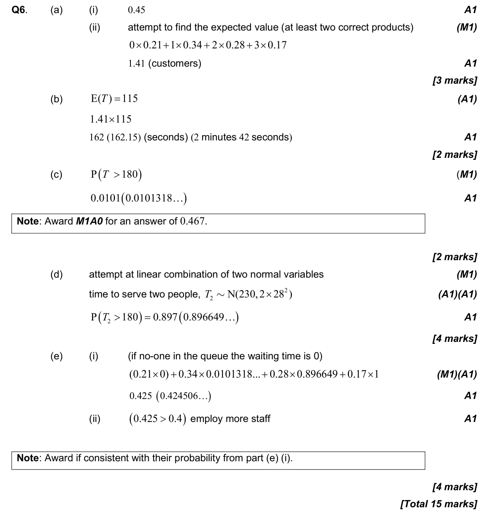

15 marks P2 TZ3 Calculator 4.7 Discrete random variables4.15 Combining normal variables and the central limit theorem4.6 Combined, mutually exclusive, conditional, independence and probability diagrams4.9 Normal distribution and calculations Question Hide breakdown abcde Markscheme 